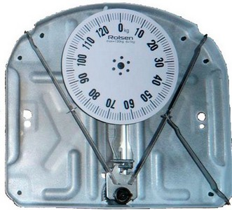

В советские времена нашим родителям не приходилось выбирать, какими приборами пользоваться. Весы в те времена были только одного вида – механического. Сегодня, благодаря техническому прорыву, стало возможным использование самых различных устройств. На прилавках магазинов появились «умные» электронные приборы. А у современного покупателя возник выбор и, как следствие вопрос, какие весы лучше в использовании: электронные или механические?
С появлением электронных весов, производители, в борьбе за внимание покупателей, стали снабжать их разнообразными диагностическими функциями и анализаторами. Из-за всевозможных дополнительных возможностей электронных моделей, всем известные механические приборы для измерения веса отступили на второй план. Но может быть такая оценка преждевременна, и остались пользователи, которые все же отдают предпочтение механическим моделям? Так какие напольные весы лучше: проверенные временем механические или современные электронные?
Это можно сделать с помощью колёсика, находящегося на конструкции сбоку. Такие устройства хорошо применять в быту, когда высокая точность измерения не в приоритете, когда не важны граммы. Интервал деления в таких весах составляет целый килограмм, реже 500 грамм. С их помощью, например, можно узнать вес взрослого человека.
Электроника постепенно вытесняет своих аналоговых предшественников. Это происходит по причине высокой точности такой техники и простой эксплуатации. Бытовые весы – не исключение. Люди делают выбор в пользу таких устройств благодаря их точности и эффективности. За счёт чего это происходит? Главный элемент всех электронных весов — это тензорезисторные датчики.
Механические весы полюбились многим благодаря их простейшей конструкции. Основным элементом в подобных устройствах является измерительная пружина. Когда мы встаём на платформу прибора, она под действием массы тела растягивается, поворачивая стрелку вдоль шкалы с цифрами, либо саму шкалу. Точность взвешивания на таких весах далека от совершенства. Производители сообщают о погрешности в 1 килограмм.
